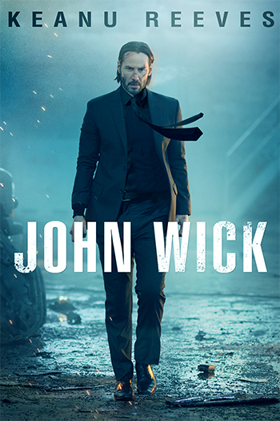
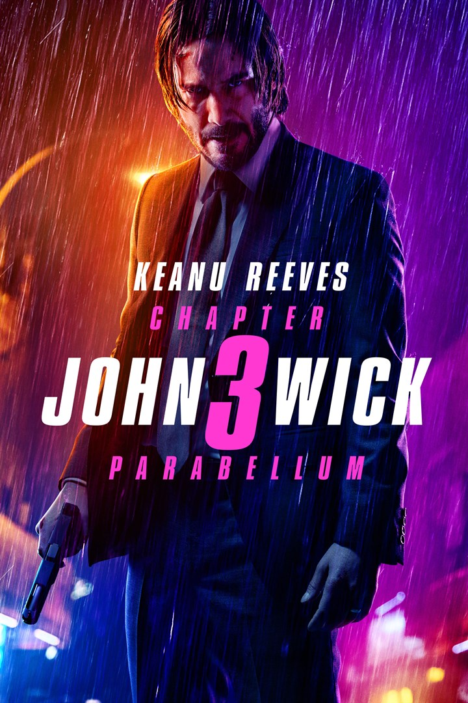

Jhon Wick: Chapter 1

Release date:
October 24 2014
Plot:
The film follows a retired hitman seeking vengeance for the death of his beloved dog, which was a gift from his recently deceased wife.
The film has been well-received by critics and audiences alike for its intense and stylish action scenes, as well as Keanu Reeves' strong performance as the vengeful John Wick.
The film has also received praise for its inventive use of gun fu, a cinematic style that combines the use of firearms with martial arts.
Jhon Wick: Chapter 2

Release date:
February 10, 2017
Plot:
The plot follows retired hitman John Wick and picks up where the first film left off and follows John as he is pulled back into the criminal underworld to fulfill a blood oath.
The film has been generally well-received by critics for its intense and stylish action scenes, as well as its expansion on the world-building and mythology of the original film.
Jhon Wick: Chapter 3

Release date:
May 17, 2019
Plot:
John Wick goes on the run from a legion of hitmen after a bounty is placed for his murder. The film continues the story of John Wick, who is on the run after being excommunicated
from the criminal organization known as the "High Table."